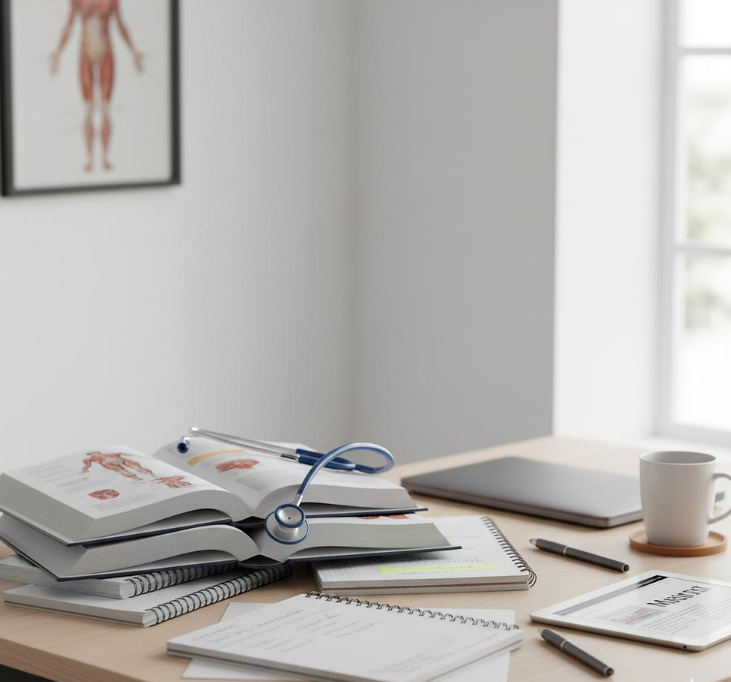

Meus objetivos
Construindo hoje o caminho para o futuro que desejo alcançar.
O futuro que desejo construir
Meu principal objetivo é ingressar na faculdade de Medicina e me dedicar ao máximo durante essa nova etapa da minha vida.
Sei que será uma jornada que exigirá muito estudo, esforço, responsabilidade e dedicação, mas estou disposta a enfrentar os desafios necessários para realizar esse sonho.
Ainda estou pesquisando as universidades e descobrindo qual instituição será o melhor lugar para iniciar minha formação.

Etapas que desejo alcançar
Ingressar na faculdade
Conquistar uma vaga no curso de Medicina e iniciar minha formação.
Me dedicar aos estudos
Aproveitar cada aprendizado e desenvolver os conhecimentos necessários para a profissão.
Me especializar
Buscar uma especialização em Pediatria e aprofundar meus conhecimentos.
Exercer a profissão
Ser uma médica dedicada, humana e comprometida com o cuidado dos pacientes.
Um sonho que quero realizar
Mais do que conquistar um diploma, quero me tornar uma profissional que faça a diferença na vida das pessoas. Quero olhar para trás e sentir orgulho de cada esforço, de cada aprendizado e de cada passo que me aproximou desse sonho.
Ainda tenho um longo caminho pela frente, mas estou animada para construir minha história.